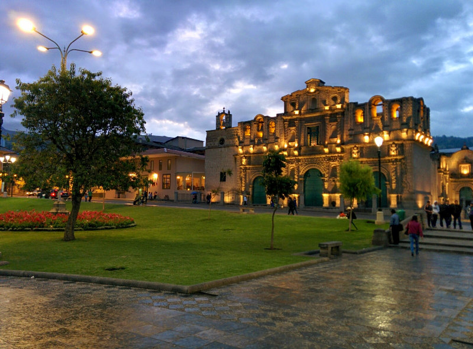

Plaza de Armas de Cajamarca
La plaza de armas de Cajamarca es una de las más bellas, amplias e importantes del Perú. Fue escenario de la caída del Imperio Incaico, ya que en este lugar aconteció uno de los hechos que marcó la Historia del Perú: fue ejecutado
el inca Atahualpa por los españoles; hoy en día en ese mismo lugar destaca una gran pileta de piedra labrada del Siglo XVIII.Está ubicada en el Centro Histórico de Cajamarca.
 |